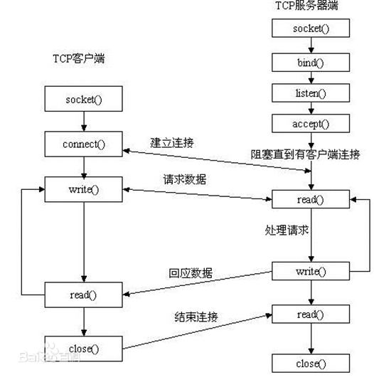

04. 创建一个TCP服务器及客户端
socket模型创建流程图

0、一些公共函数
common.h
#ifndef COMMON_H #define COMMON_H #include <stdio.h> #include <stdlib.h> #include <stdarg.h> #include <errno.h> #include <string.h> #include <unistd.h> #include <fcntl.h> #include <stddef.h> #include <stdbool.h> #include <stdint.h> #include <sys/socket.h> #include <arpa/inet.h> #include <pthread.h> // Function to print an error message and exit the program void error_exit(const char *format, ...); // Function to print an error message and exit the thread void perror_exit(const char *format, ...); // Function to log a error void log_error(const char *format, ...); // Function to log a message to stdout void log_message(const char *format, ...); #endif //COMMON_H
common.c
#include "common.h"
void error_exit(const char *format, ...) {
va_list args;
va_start(args, format);
fprintf(stderr, "Error: ");
vfprintf(stderr, format, args);
fprintf(stderr, "\n");
if (errno != 0) {
fprintf(stderr, "Error code: %d (%s)\n", errno, strerror(errno));
}
va_end(args);
exit(EXIT_FAILURE);
}
void perror_exit(const char *format, ...) {
va_list args;
va_start(args, format);
fprintf(stderr, "Error: ");
vfprintf(stderr, format, args);
fprintf(stderr, "\n");
if (errno != 0) {
fprintf(stderr, "Error code: %d (%s)\n", errno, strerror(errno));
}
va_end(args);
pthread_exit(NULL);
}
void log_error(const char *format, ...) {
va_list args;
va_start(args, format);
vfprintf(stderr, format, args);
fprintf(stderr, "\n");
if (errno != 0) {
fprintf(stderr, "Error code: %d (%s)\n", errno, strerror(errno));
}
va_end(args);
}
void log_message(const char *format, ...) {
va_list args;
va_start(args, format);
vfprintf(stdout, format, args);
fprintf(stdout, "\n");
va_end(args);
}
一、服务端开发
第一步：获取socket描述符
#include <sys/types.h> /* See NOTES */
#include <sys/socket.h> // 创建TCP协议的socket
// 创建TCP协议的socket
int fd = socket(AF_INET, SOCK_STREAM, 0);
if (fd < 0) {
error_exit("create socket handler failed");
}
socket()打开一个网络通讯端口，如果成功的话，就像open()一样返回一个文件描述符，应用程序可以像读写文件一样用read/write在网络上收发数据，如果socket()调用出错则返回-1。对于IPv4，domain参数指定为AF_INET。对于TCP协议，type参数指定为SOCK_STREAM，表示面向流的传输协议。如果是UDP协议，则type参数指定为SOCK_DGRAM，表示面向数据报的传输协议。protocol参数的介绍从略，指定为0即可。
domain:
AF_INET 这是大多数用来产生socket的协议，使用TCP或UDP来传输，用IPv4的地址
AF_INET6 与上面类似，不过是来用IPv6的地址
AF_UNIX 本地协议，使用在Unix和Linux系统上，一般都是当客户端和服务器在同一台及其上的时候使用
type:
SOCK_STREAM 这个协议是按照顺序的、可靠的、数据完整的基于字节流的连接。这是一个使用最多的socket类型，这个socket是使用TCP来进行传输。
SOCK_DGRAM 这个协议是无连接的、固定长度的传输调用。该协议是不可靠的，使用UDP来进行它的连接。
SOCK_SEQPACKET该协议是双线路的、可靠的连接，发送固定长度的数据包进行传输。必须把这个包完整的接受才能进行读取。
SOCK_RAW socket类型提供单一的网络访问，这个socket类型使用ICMP公共协议。（ping、traceroute使用该协议）
SOCK_RDM 这个类型是很少使用的，在大部分的操作系统上没有实现，它是提供给数据链路层使用，不保证数据包的顺序
protocol:
传0 表示使用默认协议。
返回值：
成功：返回指向新创建的socket的文件描述符，失败：返回-1，设置errno
第二步：配置socket
// 创建TCP协议的socket
int fd = socket(AF_INET, SOCK_STREAM, 0);
if (fd < 0) {
error_exit("create socket handler failed");
}
这段代码的作用是设置套接字fd的SO_REUSEADDR选项，允许在套接字关闭后，仍然可以重用相同的地址。
fd：这是一个已经创建的套接字文件描述符（socket descriptor），用于标识一个特定的套接字。
SOL_SOCKET：这个常量表示我们要设置的是套接字级别的选项，而不是协议级别的选项。
SO_REUSEADDR：这是一个套接字选项的标志，用于告知操作系统允许地址重用。具体来说，如果一个套接字关闭了（或者正在监听的套接字调用了close），但它的端口还未被释放，那么设置SO_REUSEADDR选项可以让其他套接字在绑定到同一端口时不会因为地址冲突而失败。
&val：这是一个指向val的指针，val是一个变量，存储了设置SO_REUSEADDR选项的值。
sizeof(val)：这是val变量的大小，用于指定要设置的选项的数据大小。
第三步：绑定到地址
// 绑定地址和端口
struct sockaddr_in servaddr;
bzero(&servaddr, sizeof(servaddr)); // 将内存区域清0
servaddr.sin_family = AF_INET;
servaddr.sin_addr.s_addr = htonl(INADDR_ANY); // 绑定到0.0.0.0，意思是所有主机都可访问
servaddr.sin_port = htons(6789); // 设置端口号
int rv = bind(fd, (const struct sockaddr *) &servaddr, sizeof(servaddr));
if (rv) {
error_exit("bind address failed");
}
#include <sys/types.h> /* See NOTES */
#include <sys/socket.h>
int bind(int sockfd, const struct sockaddr *addr, socklen_t addrlen);
sockfd：
socket文件描述符
addr:
构造出IP地址加端口号
addrlen:
sizeof(addr)长度
返回值：
成功返回0，失败返回-1, 设置errno
服务器程序所监听的网络地址和端口号通常是固定不变的，客户端程序得知服务器程序的地址和端口号后就可以向服务器发起连接，因此服务器需要调用bind绑定一个固定的网络地址和端口号。
bind()的作用是将参数sockfd和addr绑定在一起，使sockfd这个用于网络通讯的文件描述符监听addr所描述的地址和端口号。前面讲过，struct sockaddr *是一个通用指针类型，addr参数实际上可以接受多种协议的sockaddr结构体，而它们的长度各不相同，所以需要第三个参数addrlen指定结构体的长度。如：
struct sockaddr_in servaddr; bzero(&servaddr, sizeof(servaddr)); servaddr.sin_family = AF_INET; servaddr.sin_addr.s_addr = htonl(INADDR_ANY); servaddr.sin_port = htons(6666);
首先将整个结构体清零，然后设置地址类型为AF_INET，网络地址为INADDR_ANY，这个宏表示本地的任意IP地址，因为服务器可能有多个网卡，每个网卡也可能绑定多个IP地址，这样设置可以在所有的IP地址上监听，直到与某个客户端建立了连接时才确定下来到底用哪个IP地址，端口号为6666。
第四步：listen函数
// 开始监听
rv = listen(fd, SOMAXCONN);
if (rv) {
error_exit("listen failed");
}
#include <sys/types.h> /* See NOTES */
#include <sys/socket.h>
int listen(int sockfd, int backlog);
sockfd:
socket文件描述符
backlog:
排队建立3次握手队列和刚刚建立3次握手队列的链接数和
查看系统默认backlog
cat /proc/sys/net/ipv4/tcp_max_syn_backlog
典型的服务器程序可以同时服务于多个客户端，当有客户端发起连接时，服务器调用的accept()返回并接受这个连接，如果有大量的客户端发起连接而服务器来不及处理，尚未accept的客户端就处于连接等待状态，listen()声明sockfd处于监听状态，并且最多允许有backlog个客户端处于连接待状态，如果接收到更多的连接请求就忽略。listen()成功返回0，失败返回-1。
上述代码综合为：
static int init_bind_server() {
// 创建TCP协议的socket
int fd = socket(AF_INET, SOCK_STREAM, 0);
if (fd < 0) {
error_exit("create socket handler failed");
}
// 允许socket关闭后还可以使用
int reuse_val = 1;
setsockopt(fd, SOL_SOCKET, SO_REUSEADDR, &reuse_val, sizeof(reuse_val));
// 绑定地址和端口
struct sockaddr_in servaddr;
bzero(&servaddr, sizeof(servaddr)); // 将内存区域清0
servaddr.sin_family = AF_INET;
servaddr.sin_addr.s_addr = htonl(INADDR_ANY); // 绑定到0.0.0.0，意思是所有主机都可访问
servaddr.sin_port = htons(6789); // 设置端口号
int rv = bind(fd, (const struct sockaddr *) &servaddr, sizeof(servaddr));
if (rv) {
error_exit("bind address failed");
}
// 开始监听
rv = listen(fd, SOMAXCONN);
if (rv) {
error_exit("listen failed");
}
return fd;
}
第五步：accept函数
while (true) {
// accept
struct sockaddr_in client_addr = {};
socklen_t addrlen = sizeof(client_addr);
int connfd = accept(fd, (struct sockaddr *) &client_addr, &addrlen);
if (connfd < 0) {
continue; // error
}
do_response(connfd);
close(connfd);
}
void do_response(int conn_fd) {
char rbuf[64] = {};
ssize_t n = read(conn_fd, rbuf, sizeof(rbuf) - 1);
if (n < 0) {
perror("read error");
return;
}
printf("client says: %s\n", rbuf);
char wbuf[] = "world";
write(conn_fd, wbuf, strlen(wbuf));
}
这里循环去接收客户端的连接，然后处理客户端的连接，当处理完后，继续循环处理下一个连接。
#include <sys/types.h> /* See NOTES */
#include <sys/socket.h>
int accept(int sockfd, struct sockaddr *addr, socklen_t *addrlen);
sockdf:
socket文件描述符
addr:
传出参数，返回链接客户端地址信息，含IP地址和端口号
addrlen:
传入传出参数（值-结果）,传入sizeof(addr)大小，函数返回时返回真正接收到地址结构体的大小
返回值：
成功返回一个新的socket文件描述符，用于和客户端通信，失败返回-1，设置errno
三方握手完成后，服务器调用accept()接受连接，如果服务器调用accept()时还没有客户端的连接请求，就阻塞等待直到有客户端连接上来。addr是一个传出参数，accept()返回时传出客户端的地址和端口号。addrlen参数是一个传入传出参数（value-result argument），传入的是调用者提供的缓冲区 addr 的长度以避免缓冲区溢出问题，传出的是客户端地址结构体的实际长度（有可能没有占满调用者提供的缓冲区）。如果给addr参数传NULL，表示不关心客户端的地址。
我们的服务器程序结构是这样的：
while (1) {
cliaddr_len = sizeof(cliaddr);
connfd = accept(listenfd, (struct sockaddr *)&cliaddr, &cliaddr_len);
n = read(connfd, buf, MAXLINE);
......
close(connfd);
}
整个是一个while死循环，每次循环处理一个客户端连接。由于cliaddr_len是传入传出参数，每次调用accept()之前应该重新赋初值。accept()的参数listenfd是先前的监听文件描述符，而accept()的返回值是另外一个文件描述符connfd，之后与客户端之间就通过这个connfd通讯，最后关闭connfd断开连接，而不关闭listenfd，再次回到循环开头listenfd仍然用作accept的参数。accept()成功返回一个文件描述符，出错返回-1。
二、创建一个客户端
#include <stdbool.h>
#include <stdio.h>
#include <string.h>
#include <strings.h>
#include <sys/socket.h>
#include <unistd.h>
#include <arpa/inet.h>
int main(void)
{
int fd = socket(AF_INET, SOCK_STREAM, 0);
if (fd < 0) {
perror("create socket handler failed");
}
struct sockaddr_in servaddr;
bzero(&servaddr, sizeof(servaddr));
servaddr.sin_family = AF_INET;
servaddr.sin_addr.s_addr = htonl(INADDR_LOOPBACK);
servaddr.sin_port = htons(6789);
int rv = connect(fd, (const struct sockaddr *)&servaddr, sizeof(servaddr));
if (rv) {
perror("connect failed");
}
char msg[] = "你好！";
write(fd, msg, strlen(msg));
char rbuf[64] = {};
ssize_t n = read(fd, rbuf, sizeof(rbuf) - 1);
if (n < 0) {
perror("read error");
}
printf("server says: %s\n", rbuf);
close(fd);
return 0;
}
connect函数
#include <sys/types.h> /* See NOTES */
#include <sys/socket.h>
int connect(int sockfd, const struct sockaddr *addr, socklen_t addrlen);
sockdf:
socket文件描述符
addr:
传入参数，指定服务器端地址信息，含IP地址和端口号
addrlen:
传入参数,传入sizeof(addr)大小
返回值：
成功返回0，失败返回-1，设置errno
客户端需要调用connect()连接服务器，connect和bind的参数形式一致，区别在于bind的参数是自己的地址，而connect的参数是对方的地址。connect()成功返回0，出错返回-1。